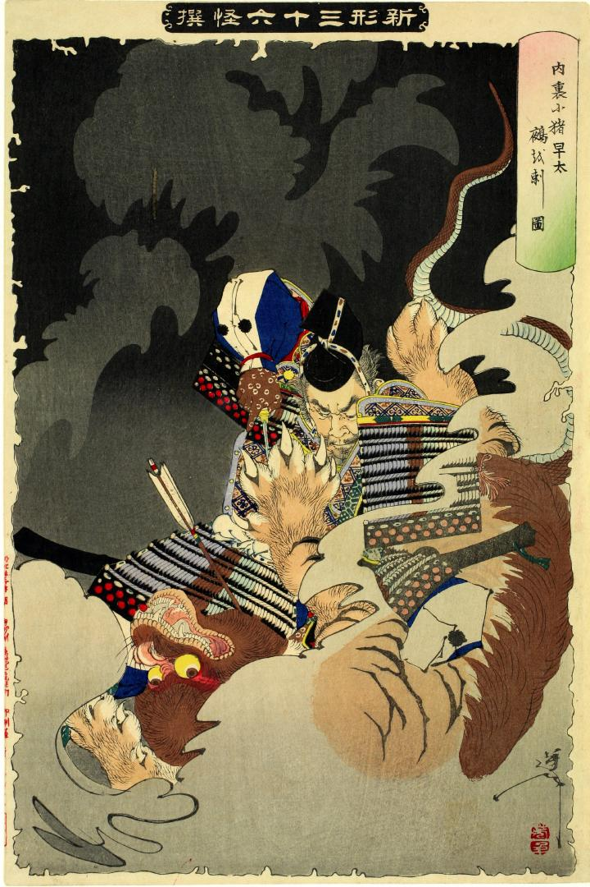

猪早太が鵺を取り押さえている場面。鵺は、頭が猿、胴体が虎、尾が蛇のようである。
著作者：芳年／出典：親書誌：U426_nichibunken_0068：内裏に猪早太鵺を刺圖；ダイリニイノハヤタヌエヲサスズ／日付：2005／資源識別子：U426_nichibunken_0068_0001_0000
Copyright (c)2010- International Research Center for Japanese Studies, Kyoto, Japan. All rights reserved.